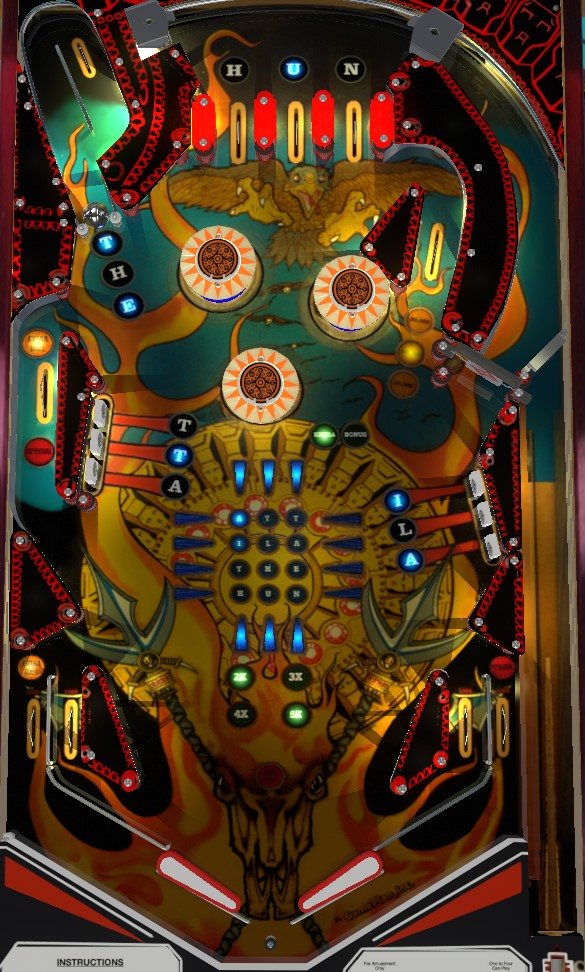

End of ball bonus is king on Attila the Hun. Top lanes, drop targets, and hits to the captive ball award the indicated letters in the phrase Attila the Hun. Each letter is worth 1,000 points of bonus, but completing a horizontal line adds 25,000 to the end of ball bonus, and completing a vertical line adds 50,000 to the bonus. Bonus multipliers are earned by completing the top lanes or making 3 hits to the captive ball.
The below image of Attila the Hun's playfield was taken from the VPX recreation by HSM.
The center of the game has a 3x4 grid of lights, labelled ATT, ILA, THE, and HUN. These letters can also be found around the game at the top lanes, captive ball, and drop targets. Make a lane or target with a letter in front of it to light that letter.
Base bonus is calculated as 1,000 points for each lit letter, plus 25,000 points for each completed horizontal row, plus 50,000 points for each completed vertical column, all times the bonus multiplier. A completed Attila the Hun grid scores 262,000 points in base bonus, which can be multiplied by up to 5. The game also keeps track of which ball you completed the most horizontal or vertical lines in, and adds the value of the completed lines from that best ball as a super bonus that carries with you for the rest of the game. If you completed the whole grid on a previous ball, the 12,000 points from the letters is added to the super bonus as well. Max bonus is 1,572,000 points: 5x 262,000 for completing the grid with 5x bonus on the current ball, plus an additional 262,000 if you completed the grid on any previous ball. Focusing on getting as much value as possible out of the bonus from the very beginning is the only way to consistently get a high score on Attila the Hun. Bonus multipliers carry over from ball to ball, but collected letters do not.
Scores 25,000 points if it is not lit for anything else. Completing both sets of drop targets and spelling either THE or HUN within a single ball lights an extra ball which alternates between the left side lane and the left out lane; there is a maximum of 2 extra balls per game. Spelling THE three times or spelling HUN three times in one ball lights a Special that alternates between the left side lane and right out lane. The left side lane cannot be lit for both extra ball and special at the same time; if both are qualified, it will alternate between one and the other. I do not know what value Special and extra ball have in competition play, if any.
Scores 10,000 points the first time it is made, 20,000 points the second time, and 30,000 points thereafter. This value carries over from ball to ball.
Always scores 1,000 points per spin.
Attila the Hun has a conventional in/out lane setup. All in/out lanes score 1,000 points. Out lanes can be lit for extra ball (left) or special (right) as described above. There is a center peg between/below the flippers.